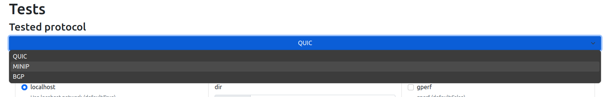
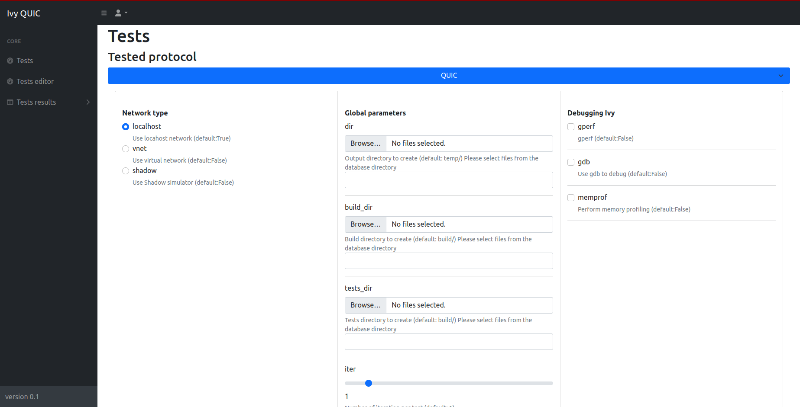
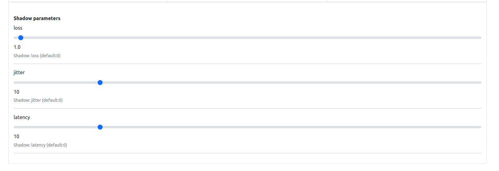
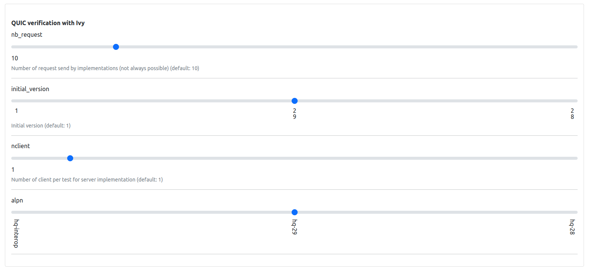
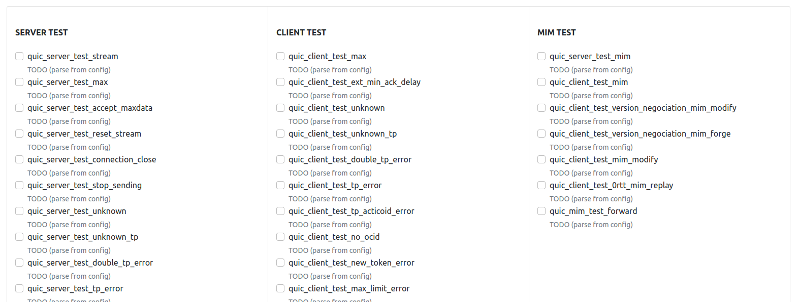
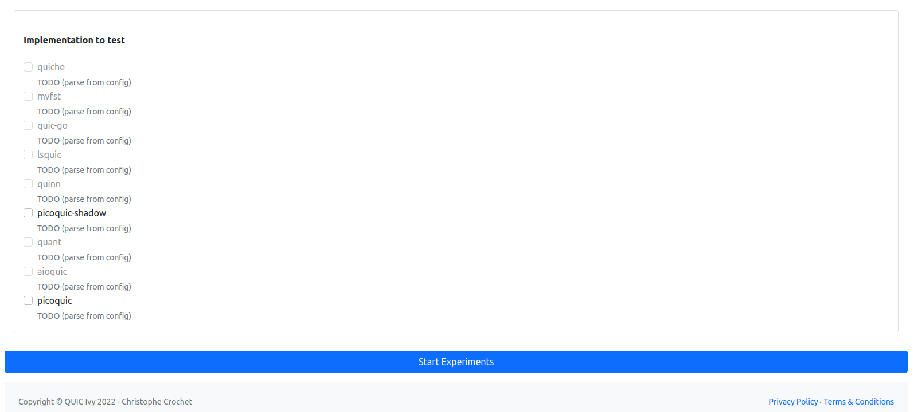

💻 Usage¤
📖 Tests parameters¤
Global parameters:
| Argument | Description | Default Value |
|---|---|---|
--dir |
Output directory to create | temp/ |
--build_dir |
Build directory to create | build/ |
--tests_dir |
Tests directory to create | build/ |
--iter |
Number of iterations per test | 1 |
--internal_iteration |
Number of Ivy iterations per test | 100 |
--getstats |
Print all stats | True |
--compile |
Compile Ivy tests | True |
--run |
Launch or not the tested implementation | True |
--timeout |
Timeout | 100 sec |
--keep_alive |
Keep alive Ivy implementation | False |
--update_ivy |
Update <include> folder for picoTLS files of Ivy (defined by g++) |
True |
--docker |
Use docker | True |
--gperf |
gperf | False |
--gdb |
Use gdb to debug | False |
--memprof |
Perform memory profiling | False |
--localhost |
Use localhost network | True |
--vnet |
Use virtual network | False |
--shadow |
Use Shadow simulator | False |
--webapp |
WebApp UI | False |
--worker |
Worker server mode | False |
Simulator parameters:
| Argument | Description | Default Value |
|---|---|---|
--loss |
Shadow: loss percentage | 0 |
--jitter |
Shadow: jitter in milliseconds | 10 |
--latency |
Shadow: latency in milliseconds | 10 |
QUIC parameters:
| Argument | Description | Default Value |
|---|---|---|
--nb_request |
Number of request send by implementations (not always possible) | 10 |
--initial_version |
Initial version for protocol testing | 1 |
--nclient |
Number of clients per test for server implementation | 1 |
--alpn |
Application-Layer Protocol Negotiation options | hq-interop, hq-29, hq-28 |
BGP parameters:
CoAP parameters:
💻 Single implementation (Command Line)¤
# Start a Docker container for interactive Bash access
IMPLEM="picoquic" make start-bash
python3 panther.py --mode client --categories all --update_include_tls \
--timeout 180 --implementations $(IMPLEM) --iter $(ITER) --compile --initial_version 29 --alpn hq-29
# Example: Runs a Docker container with 'picoquic' for interactive Bash access
🐳 WebApp (Recommended)¤
Update the docker-compose.yml file with the protocol implementation and run the following command:
# Compose the full Docker environment for all implementations
make compose
Then go to 172.27.1.10 to access the WebApp.
📖 Tutorial¤
💻 WebApp (Recommended)¤
Introduction:
This quick guide assists you in using the Ivy QUIC web application for testing QUIC implementations.
First go to: http://172.27.1.10/index.html
Configuration Steps:
- Choose Protocol: Start by selecting the protocol (QUIC, MINIP, BGP) you want to test.

-
Set Network Type: Opt for localhost, vnet, or shadow based on your network testing environment.
-
Global Parameters: Define directories for output, build, and tests using the 'Browse...' options and set the iteration count.
-
Debugging Options: Toggle performance and memory profiling tools like gperf, gdb, and memprof as needed.

- Adjust Test Settings: Customize Shadow parameters such as loss, jitter, and latency for simulation accuracy.

- Protocol custom configuration: Set the number of requests, initial version, number of clients, and ALPN for, e.g QUIC tests.

- Select Tests: Choose from server, client, and MIM tests to target specific aspects of the QUIC protocol.

-
Implementation Testing: Pick the QUIC implementation you want to test from the available options.
-
Start Experiments: Hit 'Start Experiments' to begin the testing process with your configured settings.

Running the Tests:
After setup, monitor the tests' progress and analyze the results. Make adjustments and re-run as necessary to ensure thorough testing.
Refer to the in-app documentation for detailed instructions or contact support for troubleshooting assistance.
Note that the similar approach can be used in the command line.
💻 Adding new protocol¤
- Add the corresponding configuration files in
src/panther/configs/<new_protocol>/:- Host related configurations:
src/panther/configs/<new_protocol>/implem-server/: configuration files for the server implementationsrc/panther/configs/<new_protocol>/implem-client/: configuration files for the client implementation- (
src/panther/configs/<new_protocol>/implem-<host_type>/: configuration files for theimplementation)
- Protocol related configurations:
src/panther/configs/<new_protocol>/[default_]<new_protocol>_config.inisrc/panther/configs/<new_protocol>/default_<new_protocol>_implem.ini
- Host related configurations:
- Create a folder in
panther/panther_worker/app/implementations/<new_protocol>-implementations/for the new protocol implementation - Add in
src/panther/panther.pyand insrc/panther/panther_runner/panther_<new_protocol>_runner.pythe new protocol implementation Runner. - Add in
src/panther/panther_tester/panther_<new_protocol>_tester.pythe new protocol implementation Tester. - Add in
src/panther/panther_stats/panther_<new_protocol>_stats.pythe new protocol implementation stats collector.
💻 Adding new protocol implementation¤
-
Create the corresponding Dockerfile in
src/containers/Dockerfile.<implem>, it should run over Ubuntu 20.04ARG image FROM $image:latest ADD panther/panther_worker/app/implementations/<protocol>-implementations/<implem> /PANTHER/implementations/<protocol>-implementations/<implem> WORKDIR /PANTHER/implementations/<protocol>-implementations/<implem>/ ### Install dependencies WORKDIR /PANTHER -
Add the corresponding configuration file in
src/panther/configs/<protocol>/.../<implem>.ini - Build the docker image with
IMPLEM=<implem> make build-docker- Also update the Makefile to add the new implementation (commit, building, etc)
- Add the new implementation in
docker-compose.ymlfile such as:<implem>-ivy: hostname: <implem>-ivy container_name: <implem>-ivy image: "<implem>-ivy:latest" command: python3 panther.py --update_ivy --getstats --worker --compile --docker ports: - "<new_pôrt>:80" volumes: - ${PWD}/src/webapp/panther_client.py:/PANTHER/webapp/panther_client.py - ${PWD}/src/panther/panther.py:/PANTHER/panther.py - ${PWD}/src/panther/res/shadow/shadow_client_test.yml:/PANTHER/topo.gml - ${PWD}/src/panther/res/shadow/shadow_client_test.yml:/PANTHER/shadow_client_test.yml - ${PWD}/src/panther/res/shadow/shadow_server_test.yml:/PANTHER/shadow_server_test.yml - ${PWD}/src/panther/res/shadow/shadow_client_test_template.yml:/PANTHER/shadow_client_test_template.yml - ${PWD}/src/panther/res/shadow/shadow_server_test_template.yml:/PANTHER/shadow_server_test_template.yml - ${PWD}/data/tls-keys:/PANTHER/tls-keys - ${PWD}/data/tickets:/PANTHER/tickets - ${PWD}/data/qlogs:/PANTHER/qlogs - ${PWD}/src/panther/panther_utils/:/PANTHER/panther_utils/ - ${PWD}/src/panther/panther_stats/:/PANTHER/panther_stats/ - ${PWD}/src/panther/panther_runner/:/PANTHER/panther_runner/ - ${PWD}/src/panther/panther_tester/:/PANTHER/panther_tester/ - ${PWD}/src/panther/ivy_utils/:/PANTHER/ivy_utils/ - ${PWD}/src/panther/logger/:/PANTHER/logger/ - ${PWD}/src/panther/argument_parser/:/PANTHER/argument_parser/ - ${PWD}/src/panther/configs/:/PANTHER/configs/ - ${PWD}/src/Protocols-Ivy/protocol-testing/:/PANTHER/Protocols-Ivy/protocol-testing/ - ${PWD}/src/Protocols-Ivy/doc/examples/quic:/PANTHER/Protocols-Ivy/doc/examples/quic - ${PWD}/src/Protocols-Ivy/ivy/:/PANTHER/Protocols-Ivy/ivy/ - ${PWD}/src/Protocols-Ivy/ivy/include/1.7:/PANTHER/Protocols-Ivy/ivy/include/1.7 - /tmp/.X11-unix:/tmp/.X11-unix networks: net: ipv4_address: 172.27.0.<TODO> privileged: true security_opt: - seccomp:unconfined cap_add: - NET_ADMIN tmpfs: - /dev/shm:rw,nosuid,nodev,exec,size=1024g environment: - DISPLAY=${DISPLAY} - XAUTHORITY=~/.Xauthority - ROOT_PATH=${PWD} - MPLBACKEND='Agg' restart: always devices: - /dev/dri:/dev/dri depends_on: - ivy-standalone
💻 Ivy Model Creation¤
Follow these steps to create an Ivy model for protocol verification:
-
RFC Analysis: Carefully read the RFC to identify the protocol components, such as packet types and endpoints.
-
Modeling Components: Model the identified components without the requirements initially. Focus on their fields, potential events, etc.
-
Serialization/Deserialization: Implement serialization and deserialization functions for each event that could be transmitted over the network.
-
Incorporating RFC Requirements: Integrate the requirements specified in the RFC with the modeled components to complete the Ivy model.